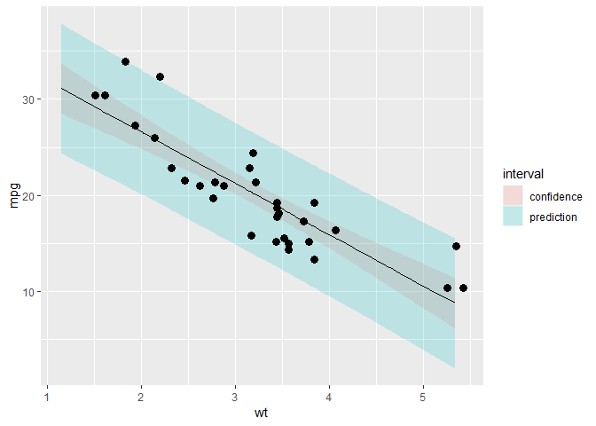

JHU DataScience Specialization/Cousers Reproducible Data/Week1-4/Regression Model Quizes
JHU Coursera Regression Model Quizes
主要练习手工计算回归模型的基础方法
Week 2
Quiz 1
手算均值
1 | x <- c(0.18, -1.54, 0.42, 0.95) |
1 | ## [1] "mean of y is : 0.147143" |
Quiz 2
线性回归
1 | x <- c(0.8, 0.47, 0.51, 0.73, 0.36, 0.58, 0.57, 0.85, 0.44, 0.42) |
| Estimate | Std. Error | t value | Pr(> | |
|---|---|---|---|---|
| (Intercept) | 1.567 | 1.252 | 1.252 | 0.246 |
| x | -1.713 | 2.105 | -0.8136 | 0.4394 |
1 | pander(lm(y~x-1)) #去除截距 |
| Estimate | Std. Error | t value | Pr(> | |
|---|---|---|---|---|
| x | 0.8263 | 0.5817 | 1.421 | 0.1892 |
Quiz 3
mtcars 回归系数
| (Intercept) | wt |
|---|---|
| 37.29 | -5.344 |
Quiz 4
练习求b1
\[\begin{align} Cor(Y,X) &= 0.5 \qquad Sd(Y) = 1 \qquad Sd(X) = 0.5 \\ \beta_1 &= Cor(Y,X) * \frac{Sd(Y)}{Sd(X)} \end{align}\]
1 | B1 = 0.5 * 1 / 0.5 |
Quiz 5
1 | corr <- .4; emean <- 0; varr1 <- 1 |
1 | # [1] 0.6 |
Quiz 6
1 | x <- c(8.58, 10.46, 9.01, 9.64, 8.86) |
1 | ## [1] -0.9718658 1.5310215 -0.3993969 0.4393366 -0.5990954 |
Quiz 7
1 | x <- c(0.8, 0.47, 0.51, 0.73, 0.36, 0.58, 0.57, 0.85, 0.44, 0.42) |
| Estimate | Std. Error | t value | Pr(> | |
|---|---|---|---|---|
| (Intercept) | 1.567 | 1.252 | 1.252 | 0.246 |
| x | -1.713 | 2.105 | -0.8136 | 0.4394 |
Quiz 8
It must be identically 0.
Quiz 9
1 | x <- c(0.8, 0.47, 0.51, 0.73, 0.36, 0.58, 0.57, 0.85, 0.44, 0.42) |
1 | # [1] 0.573 |
Quiz 10
\[\begin{align} \beta_1 &= Cor(Y,X)*Sd(Y)/Sd(X) \\ Y_1 &= Cor(Y,X)*Sd(X)/Sd(Y) \\ \beta_1/Y_1 &= Sd(Y)^2/Sd(X)^2 \notag \\ &= Var(Y)/Var(X) \end{align}\]
Week 3
Quiz 1
求系数
1 | x <- c(0.61, 0.93, 0.83, 0.35, 0.54, 0.16, 0.91, 0.62, 0.62) |
| Estimate | Std. Error | t value | Pr(> | |
|---|---|---|---|---|
| (Intercept) | 0.1885 | 0.2061 | 0.9143 | 0.391 |
| x | 0.7224 | 0.3107 | 2.325 | 0.05296 |
Quiz 2
总平方和与回归与残差关系
\[\begin{align} y_i &= \beta_0 + \beta_1 x_i + e_i \\ \hat y_i &= \beta_0 + \beta_1 x_i\\ e_i &= y_i - \hat y_i \\ SS_{total} &= \|y_i-\bar y \mathbf{1}\|^2 = \| \hat y_i-\bar y \mathbf{1}\|^2 + \|\hat \epsilon\| \notag \\ &= \sum_{i=1}^n (y_i-\bar y)^2 = \sum_{i=1}^n (\hat y_i-\bar y)^2 + \sum_{i=1}^n (y_i-\hat y)^2 \notag \\ &= SS_{regression} + SS_{residual} \\ \mathbf{1} &= (1,1,\ldots,1)^T \end{align}\]
平方和与残差
\[\begin{align} SS_x &= \sum_{i=1}^n {(x_i - \bar x)^2} \\ e_i &= y_i - (\beta_1x_i + \beta_0) \\ \hat \sigma^2 &= \frac{1}{n-2} \sum_{i=1}^n e_i^2 \\ &= \frac{1}{n-2} SS_{residual} \sim \chi_{(n-2)}^2 \end{align}\]
1 | # init |
方差与系数方差关系
\[\begin{align} \sigma^2_{\hat\beta_1}&=Var(\hat\beta_1)=\frac{\sigma^2}{SS_x}\\ \sigma^2_{\hat\beta_0}&=Var(\hat\beta_0)=(\frac{1}{n}+\frac{\bar X^2}{SS_x})\sigma^2 \end{align}\]
\[\begin{align} R^2 = \frac{SS_{regression}}{SS_{total}} = \frac{\sum_{i=1}^n (\hat y_i-\bar y)^2}{\sum_{i=1}^n (y_i-\bar y)^2} \end{align}\]
t分布与方差
\[\begin{align} \frac{\hat\beta_j-\beta_j}{\sigma_{\hat\beta_j}} \sim t_{\beta_j}(n-p) \end{align}\]
1 | # 计算 Beta1 |
| Estimate | Std. Error | t value | P(> | |
|---|---|---|---|---|
| (Intercept) | 0.1885 | 0.2061 | 0.9143 | 0.391 |
| x | 0.7224 | 0.3107 | 2.325 | 0.05296 |
Quiz 3
Dataset: mtcars
1 | # 构造模型 |
| Estimate | Std. Error | t value | Pr(> | |
|---|---|---|---|---|
| (Intercept) | 37.29 | 1.878 | 19.86 | 8.242e-19 |
| wt | -5.344 | 0.5591 | -9.559 | 1.294e-10 |
| Observations | Residual Std. Error | \(R^2\) | Adjusted \(R^2\) |
|---|---|---|---|
| 32 | 3.046 | 0.7528 | 0.7446 |
1 | sumCoef <- summary(fit)$coefficients |
| fit | lwr | upr | |
|---|---|---|---|
| confidence | 20.09 | 18.99 | 21.19 |
| prediction | 20.09 | 13.77 | 26.41 |
| manual | 20.09 | 15.27 | 24.91 |

Quiz 4
The estimated expected change in mpg per 1,000 lb increase in weight.
Quiz 5
1 | pander(predict(fit,newdata = data.frame(wt=3000/1000),interval = ("prediction"))) |
| fit | lwr | upr |
|---|---|---|
| 21.25 | 14.93 | 27.57 |
Quiz 6
| fit | lwr | upr |
|---|---|---|
| 20.09 | 12.58 | 27.6 |
| fit | lwr | upr |
|---|---|---|
| 20.09 | 18.99 | 21.19 |
| fit | lwr | upr |
|---|---|---|
| 20.09 | 13.77 | 26.41 |
Quiz 7
1 | fit3<-lm(mpg~I(wt/100),mtcars) |
| Estimate | Std. Error | t value | Pr(> | |
|---|---|---|---|---|
| (Intercept) | 37.29 | 1.878 | 19.86 | 8.242e-19 |
| I(wt/100) | -534.4 | 55.91 | -9.559 | 1.294e-10 |
1 | #It would get multiplied by 100. |
Quiz 8
The new intercept would be bhat0???cbhat1
Quiz 9
1 | fit1 <- lm(mpg ~ wt, data = mtcars) |
1 | # [1] 0.2471672 |
1 | 1 - summary(fit1)$r.squared#options |
1 | # [1] 0.2471672 |
Quiz 10
1 | x <- c(0.61, 0.93, 0.83, 0.35, 0.54, 0.16, 0.91, 0.62, 0.62) |
1 | # [1] 1.110223e-16 |
1 | sum(resid(lm(y ~ 1))) |
1 | # [1] -3.816392e-17 |
1 | sum(resid(lm(y ~ x - 1))) |
1 | # [1] 0.220565 |
1 | #If an intercept is included, then they will sum to 0. |
Week 4
Quiz 1
| Estimate | Std. Error | t value | Pr(> | |
|---|---|---|---|---|
| (Intercept) | 29.74 | 2.541 | 11.7 | 2.688e-12 |
| I(1 * (cyl == 8)) | -1.815 | 1.358 | -1.337 | 0.192 |
| I(1 * (cyl == 4)) | 4.256 | 1.386 | 3.07 | 0.004718 |
| wt | -3.206 | 0.7539 | -4.252 | 0.000213 |
1 | # [1] -6.07086 |
Quiz 2
| Estimate | Std. Error | t value | Pr(> | |
|---|---|---|---|---|
| (Intercept) | 19.74 | 1.218 | 16.21 | 4.493e-16 |
| I(1 * (cyl == 8)) | -4.643 | 1.492 | -3.112 | 0.004152 |
| I(1 * (cyl == 4)) | 6.921 | 1.558 | 4.441 | 0.0001195 |
Quiz 3
1 | # |
1 | # |
Quiz 4
1 | ## Estimate Std. Error t value Pr(>|t|) |
函数step可以实现基于AIC准则的模型选择，最优模型为AIC值最小的
| Estimate | Std. Error | t value | Pr(> | |
|---|---|---|---|---|
| (Intercept) | 9.618 | 6.96 | 1.382 | 0.1779 |
| wt | -3.917 | 0.7112 | -5.507 | 6.953e-06 |
| qsec | 1.226 | 0.2887 | 4.247 | 0.0002162 |
| am | 2.936 | 1.411 | 2.081 | 0.04672 |
Quiz 5
1 | x <- c(0.586, 0.166, -0.042, -0.614, 11.72) |
1 | ## 1 2 3 4 5 |
Quiz 6
异常值
- 杠杆点
杠杆点对回归系数没有影响，但是会影响决定系数，可以通过观察帽子矩阵来识别，杠杆作用的平均值为h=p/n，p为自变量个数，n为样本量，如果一个观测值的杠杆值>2h，则应考虑为杠杆点，考虑剔除或采取措施。R中可以通过hatvalues函数计算杠杆值。
- 影响点
影响点有将回归线拉向它的趋势，因此会影响回归系数的值，可以通过COOK距离来判断，R中可以通过cooks.distance函数计算每个观测值的COOK距离。根据经验，如果距离大于1，则说明观测点为影响点。
此外，还可以通过dffits函数和dfbetas函数计算相应的值，如果dffits>2/根号p/n，那么可认为是影响点，如果dfbetas>2/根号n，也可认为是影响点，p为自变量个数，n为样本量
1 | x <- c(0.586, 0.166, -0.042, -0.614, 11.72) |
1 | # (Intercept) x |
1 | round(hatvalues(fit),4) |
1 | ## 1 2 3 4 5 |